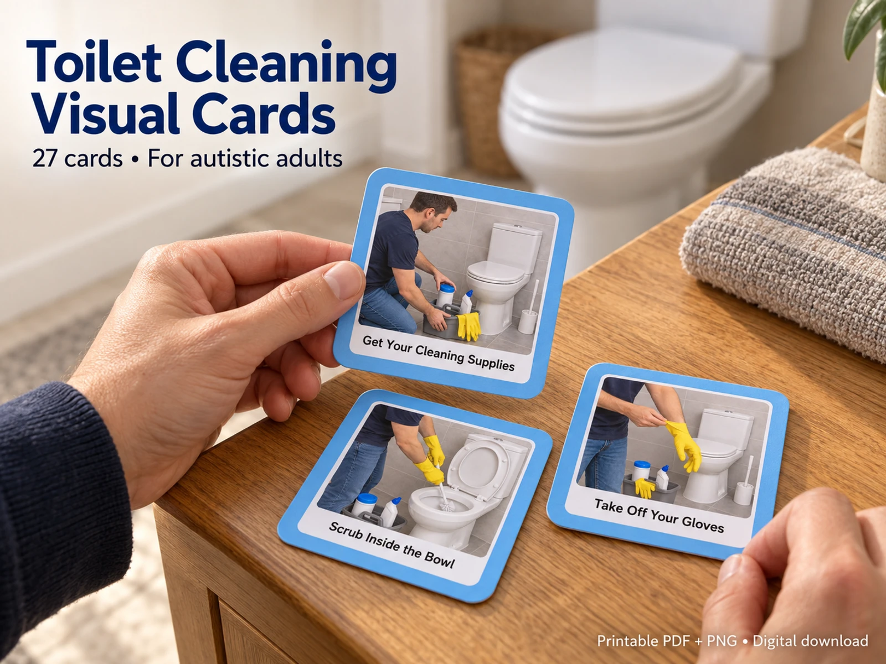

Start safely
Read labels, ventilate the bathroom and put on gloves. Keep the reminder not to mix cleaning products nearby.

Actual cards shown. Boards, cleaning supplies and other styling props are not included.
Image 1 of 10
VISUAL SCHEDULES & DAILY LIVING SKILLS
Clear action pictures for an everyday cleaning routine.
US$6.99 Digital download
Show the next step, build a visual cleaning schedule and keep help and break communication cards within reach. Choose the prompts that suit the person and work at their pace.
Ready to download
Buy now — US$6.99Continue to our Payhip checkout. After purchase, download all four files straight away and receive a download link by email.
Digital files only. No physical cards or accessories are shipped.
Created by me with the help of AI.
ONE STEP AT A TIME
Use a manageable selection or the complete sequence with the support the person needs.
Read labels, ventilate the bathroom and put on gloves. Keep the reminder not to mix cleaning products nearby.
Separate visual prompts cover the bowl, brush, lid, seat, rim and base, with supplies and surroundings kept consistent.
Put used wipes in the bin, store supplies, remove gloves and wash hands. Help and break cards can be used throughout.
Four files: a 3-page A4 card PDF, a 4-page welcome and user guide, and two ZIP downloads containing all 27 numbered PNG cards. The guide includes the card index, safe-use reminders, printing instructions, a thank-you and a polite honest-review request.
Print the A4 PDF at 100% / Actual Size. Turn off Fit to Page and measure the first card. Cut around the rounded blue rim or use the square corner marks. When using the PNGs in another layout, set both dimensions to 5 cm.
Yes. Select relevant cards, arrange them in a familiar sequence and show one step at a time. The filenames provide an order; the cards have no printed numbers. The card text and artwork are supplied as finished images.
Always follow your cleaning product labels for ventilation, gloves, waiting times, rinsing, disposal and suitable surfaces. Never mix cleaning products. These prompts do not replace product instructions or the individual support needed to clean safely.
No. You provide printing, lamination, mounting materials, a board and cleaning supplies.